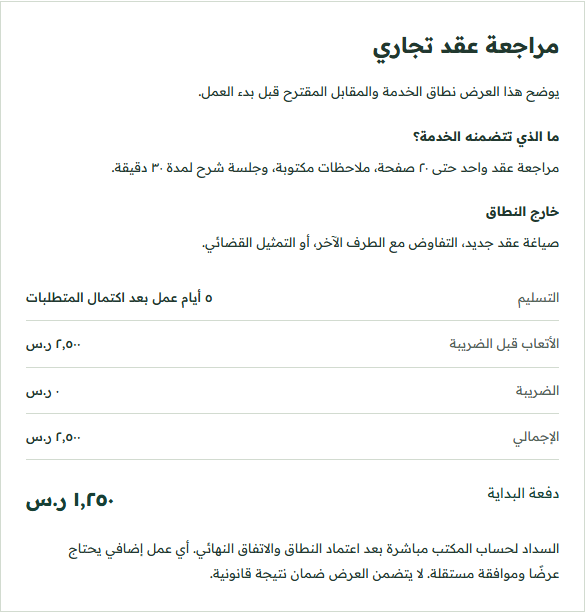
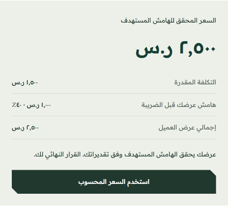
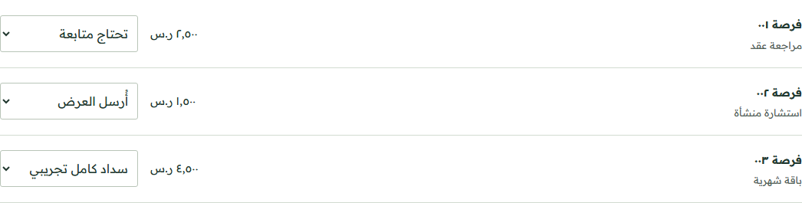

عرض أتعاب · مثال توضيحي
مراجعة عقد تجاري
مراجعة عقد واحد، ملاحظات مكتوبة، وجلسة شرح.
- نطاق العمل
- مراجعة واحدة + جلسة شرح
- التسليم
- ٥ أيام عمل
الأتعاب قبل الضريبة٢٬٥٠٠ ر.س
نطاق معلوم. أتعاب محددة. خطوة واضحة.
مؤكّد مساحة للمحامي يصمّم فيها خدمته، ويحسب تكلفتها، ويقدّم عرض أتعاب واضحًا لعميله.
الدفع لحساب المحامي مباشرة. دون عمولة.
مراجعة عقد واحد، ملاحظات مكتوبة، وجلسة شرح.
نطاق معلوم. أتعاب محددة. خطوة واضحة.
لا يشرح الرقم وحده قيمة العمل. حدّد ما تشمله خدمتك، واحسب وقتك ومصاريفك، ثم قدّم المقابل في عرض يفهمه العميل.
يبقى الحجز جزءًا من المسار؛ ويضيف مؤكّد ما يحتاجه العرض قبله وبعده. هذه نسخة تجريبية يمكنك استكشافها الآن.
غيّر نوع الخدمة، وشاهد أثره في العرض والحاسبة. الأسعار أمثلة وليست تقديرًا للسوق.

نطاق الخدمة ومقابلها في عرض واحد.ابدأ بالتسعير ثم العرض. البيانات تجريبية داخل الصفحة؛ لا تُرسل ولا تُحفظ بعد إغلاقها.
الحساب: التكلفة ÷ (١ − نسبة الهامش). تكلفة الساعة تشمل تقديرك لأجرك ومصاريف المكتب. هذه نتيجة حسابية، وليست سعر السوق أو تقدير أتعاب قانوني.
مسودة للمراجعة، وليست اتفاقية موقّعة.
يوضح هذا العرض نطاق الخدمة والمقابل المقترح قبل بدء العمل.
السداد لحساب المكتب مباشرة بعد اعتماد النطاق والاتفاق النهائي. أي عمل إضافي يحتاج عرضًا وموافقة مستقلة. لا يتضمن العرض ضمان نتيجة قانونية.
مراجع تجريبية تعود إلى حالتها الأولى عند تحديث الصفحة. لا يثبت تغيير الحالة سدادًا فعليًا. يحتفظ المكتب بسجله الفعلي في جدول خاص يقتصر على المراجع والمبالغ والحالات؛ ولا يتضمن هذا المثال حفظ ذلك السجل.
بخصوص عرض الأتعاب المرسل لكم، هل نطاق الخدمة وطريقة السداد واضحة؟ يسعدنا توضيح أي استفسار قبل اعتماد العرض. بدء العمل بعد الاتفاق النهائي.
استخدام افتراضي ثابت: ٨ من ١٠ ساعات
الحساب على الرصيد المتبقي. المحامي يحدد بنفسه انتماء الطلب للنطاق؛ الأداة لا تفسر عقودًا.
عرض التجديد يرتبط بالاستخدام والحاجة الفعلية. لا تُعدّل الباقة تلقائيًا.
ثلاث لقطات من مساحة العمل: حساب التكلفة، وتوضيح نطاق الخدمة، ومتابعة المرحلة التالية.


تعرّف إلى رحلة مؤكّد من تقدير التكلفة إلى عرض الأتعاب، وحدود النسخة التجريبية.
اقرأ ملخص الخدمة ←نبدأ بمسار واحد: تجهيز عرض أتعاب واضح واستخدامه مع طلب قائم. يناسب مكتبًا عنده عروض متكررة وحاجة فعلية، وقادر على إدارة سجله بنفسه. نقيس الاستخدام والتجديد قبل التوسع.
هذه باقة للاختبار، وليست اشتراكًا متاحًا للشراء الآن. لا يتغير سعر أي عميل حالي.
٣٩٩ ر.س / شهر
+ ٣٠٠ ر.س إعداد مرة واحدة
أول ٣٠ يومًا مع الإعداد: ٦٩٩ ر.س. التجديد ٣٩٩ ر.س لشهر جديد بموافقة ودفع مستقلين، دون خصم تلقائي. الضرائب تحدد قبل التعاقد.
الشهر الأول يشمل الاشتراك والإعداد؛ التجديد يشمل الاشتراك فقط. الأرقام قبل أي ضريبة منطبقة. الأسعار مبنية على تكلفة المكتب، وليست تسعير سوق. زيادة قيمة العقود لا تعني زيادة الربح؛ قارن التحصيل والتكلفة.
الحاسبة، معاينة العرض، النسخ والطباعة، ومحاكاة الفرص والإضافات تعمل في متصفحك. هذه صفحة عرض مستقلة. حفظ فرص حقيقية، حسابات المكاتب، سجل الاعتماد، وإثبات التحصيل تحتاج مرحلة ربط واختبار قبل التشغيل.
لا. التسعير حساب إداري من مدخلات المكتب. المحامي يحدد الأتعاب والنطاق والحاجة للخدمة ويعتمد العرض. لا نطلب مستندات أو بيانات هوية أو أرقام قضايا أو أسماء خصوم.
الخدمة لتنظيم وتحسين التعامل مع طلبات المكتب القائمة. دون جلب عملاء أو عمولة أو ضمان دخل. تُسدّد مدفوعات العميل إلى المكتب مباشرة.
الحجز يثبّت موعدًا. مؤكّد يضيف قبله وبعده: تسعير مبني على تكلفتك، عرض أتعاب واضح، ومتابعة حالة كل طلب حتى أول دفعة. التفاصيل في الملخص.